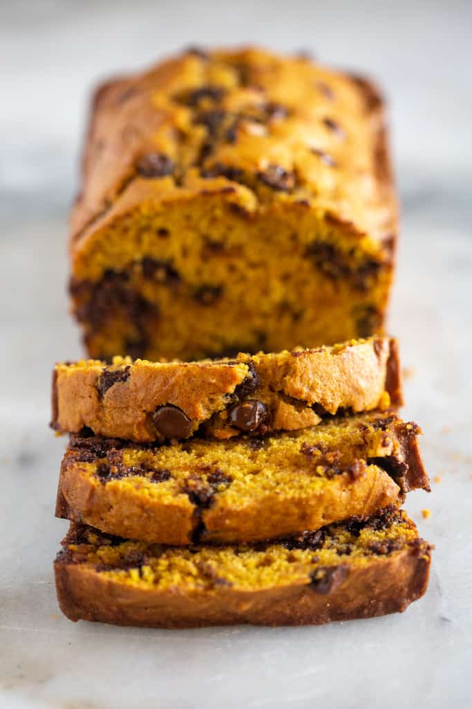

Pumpkin Chocolate Chip Bread

Description
This Pumpkin Chocolate Chip Bread recipe is moist, delicious, and easy to make! It has the perfect Fall flavors and can be frozen.
Ingredients
- 1 3/4 cups all purpose flour
- 1 tsp baking soda
- 2 tsp ground cinnamon
- 1/2 tsp pumpkin pie spice
- 3/4 tsp salt
- 2 large eggs
- 3/4 cup sugar
- 1/2 cup packed light brown sugar
- 1 1/2 cups pumpkin puree
- 1/2 cup vegetable oil
- 1/3 cup orange juice
- 2/3 cup semisweet chocolate chips
Steps
- Lower the oven rack to the bottom third position. Preheat to 350 degrees F. Grease a bread tin.
- In a large bowl, whisk the flour, baking soda, cinnamon, pumpkin pie spice, and salt until combined.
- In a medium bowl, whisk the eggs and both sugars until combined. Whisk in the pumpkin puree, oil, and orange juice.
- Pour the wet slowly into the dry while gently stirring with a rubber spatula. Stir until just combined. Don't overmix!
- Fold in the chocolate chips.
- Pour mixture into the greased bread tin.
- Bake for 25-30 minutes. Loosely cover with tin foil.
- Bake for another 20-30 minutes or until a toothpick comes out clean.